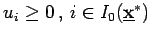
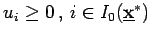
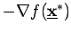
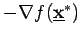
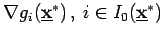
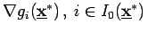
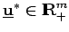
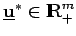

Inhalt Index DeskTop Bronstein

 Optimierung Nichtlineare Optimierung Problemstellung und theoretische Grundlagen Optimalitätsbedingungen
Optimierung Nichtlineare Optimierung Problemstellung und theoretische Grundlagen Optimalitätsbedingungen


Ein Punkt  genügt den lokalen KUHN-TUCKER-Bedingungen, wenn Zahlen , existieren, für die gilt
genügt den lokalen KUHN-TUCKER-Bedingungen, wenn Zahlen , existieren, für die gilt
Der Punkt  heißt dann auch KUHN-TUCKER-Punkt oder stationärer Punkt. Geometrisch betrachtet erfüllt ein Punkt
heißt dann auch KUHN-TUCKER-Punkt oder stationärer Punkt. Geometrisch betrachtet erfüllt ein Punkt  die lokalen KUHN-TUCKER-Bedingungen, wenn der negative Gradient  in dem durch die Gradienten der in
die lokalen KUHN-TUCKER-Bedingungen, wenn der negative Gradient  in dem durch die Gradienten der in  aktiven Nebenbedingungen , aufgespannten Kegel liegt (s. Abbildung).
aktiven Nebenbedingungen , aufgespannten Kegel liegt (s. Abbildung).
Oft wird die folgende äquivalente Formulierung für (18.39a,b) verwendet:  genügt den lokalen KUHN-TUCKER-Bedingungen, wenn ein  existiert, so daß gilt
genügt den lokalen KUHN-TUCKER-Bedingungen, wenn ein  existiert, so daß gilt